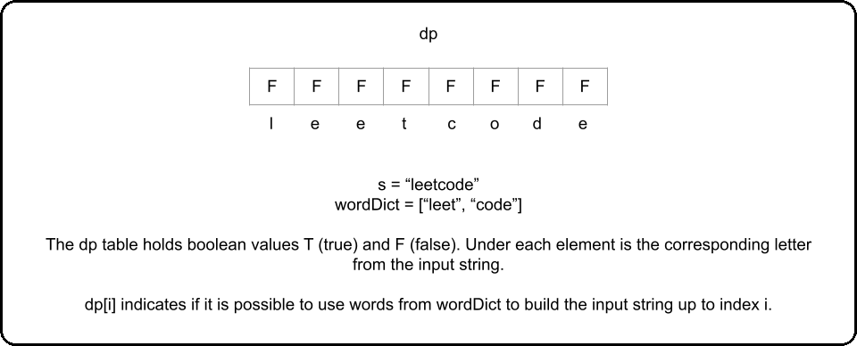
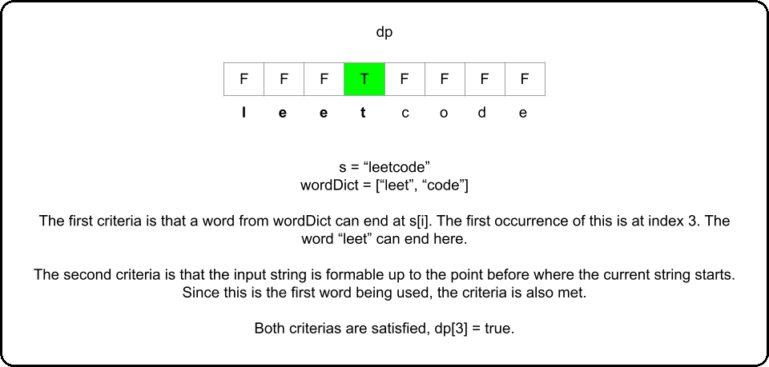
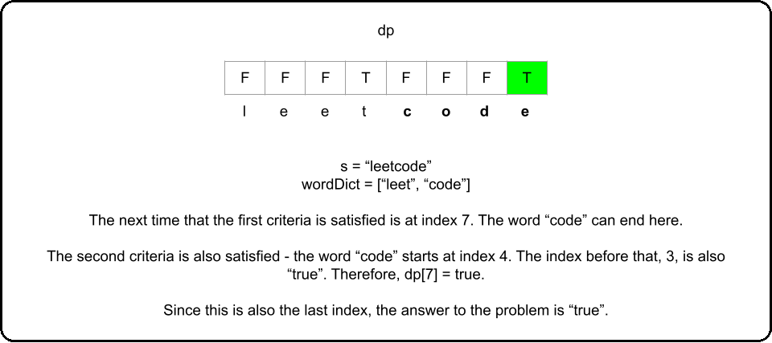

In this article, we'll use the framework to solve Word Break. So far, in this card, this is the most unique and perhaps the most difficult problem to see that dynamic programming is a viable approach. This is because, unlike all of the previous problems, we will not be working with numbers at all. When a question asks, "is it possible to do..." it isn't necessarily a dead giveaway that it should be solved with DP. However, we can see that in this question, the order in which we choose words from wordDict is important, and a greedy strategy will not work.
Recall back in the first chapter, we said that a good way to check if a problem should be solved with DP or greedy is to first assume that it can be solved greedily, then try to think of a counterexample.
Let's say that we had s= "abcdef" and wordDict = [ "abcde", "ef", "abc", "a", "d"]. A greedy algorithm (picking the longest substring available) will not be able to determine that picking "abcde" here is the wrong decision. Likewise, a greedy algorithm (picking the shortest substring available) will not be able to determine that picking "a" first is the wrong decision.
With that being said, let's develop a DP algorithm using our framework:
For this problem, we'll look at bottom-up first.
1. An array that answers the problem for a given state
Despite this problem being unlike the ones we have seen so far, we should still stick to the ideas of the framework. In the article where we learned about multi-dimensional dynamic programming, we talked about how an index variable, usually denoted i is typically used in DP problems where the input is an array or string. All the problems that we have looked at up to this point reflect this.
In all the past problems, we had a function dp return the answer to the original problem for some state. We should try to do the same thing here. The problem is asking, is it possible to create s by combining words in wordDict. So, let's have an array dp where dp[i] represents if it is possible to build the string s up to index i from wordDict. To answer the original problem, we can return dp[s.length - 1] after populating dp.
2. A recurrence relation to transition between states
At each index i, what criteria determines if dp[i] is true? First, a word from wordDict needs to be able to end at index i. In terms of code, this means that there is some word from wordDict that matches the substring of s that starts at index i - word.length + 1 and ends at index i.
We can iterate through all states of i from 0 up to but not including s.length, and at each state, check all the words in wordDict for this criteria. For each word in wordDict, if s from index i - word.length + 1 to i is equal to word, that means word ends at i. However, this is not the sole criteria.
Remember, we are forming s s by adding words together. That means, if a word word meets the first criteria and we want to use it in a solution, we would add it on top of another string. We need to make sure that the string before it is also formable. If word word meets the first criteria, it starts at index i - word.length + 1 i - word.length + 1. The index before that is i - word.length i - word.length, and the second criteria is that s s up to this index is also formable from wordDict wordDict. This gives us our recurrence relation:
dp(i) = true if s.substring(i - word.length + 1, i + 1) == word and dp[i - word.length] == true for any word in wordDict, otherwise false



In summary, the criteria is:
3. Base cases
The base case for this problem is another simple one. The first word used from wordDict wordDict starts at index 0 0, which means we would need to check dp[-1] dp[-1] for the second criteria, which is out of bounds. To fix this, we say that the second criteria can also be satisfied by i == word.length - 1 i == word.length - 1.
dp = [False] * len(s)
for i in range(len(s)):
for word in wordDict:
# Make sure to stay in bounds while checking criteria
if i >= len(word) - 1 and (i == len(word) - 1 or dp[i - len(word)]):
if s[i - len(word) + 1 : i + 1] == word:
dp[i] = True
break
return dp[-1]
In the top-down approach, we can check for the base case by returning true true if i less 0. In Java, we will memoize by using a -1 -1 to indicate that the state is unvisited, 0 0 to indicate false false, and 1 1 to indicate true true.
@lru_cache(None)
def dp(i):
if i < 0:
return True
for word in wordDict:
if (i >= len(word) - 1) and dp(i - len(word)):
if s[i - len(word) + 1 : i + 1] == word:
return True
return False
return dp(len(s) - 1)
Let's say that n = s.length n = s.length, k = wordDict.length k = wordDict.length, and L L is the average length of the words in wordDict wordDict. While the space complexity for this problem is the same as the number of states n n, the time complexity is much worse. At each state i i, we iterate through wordDict wordDict and splice s s to a new string with average length L L. This gives us a time complexity of 𝑂 ( 𝑛 ⋅ 𝑘 ⋅ 𝐿 ) O(n⋅k⋅L).